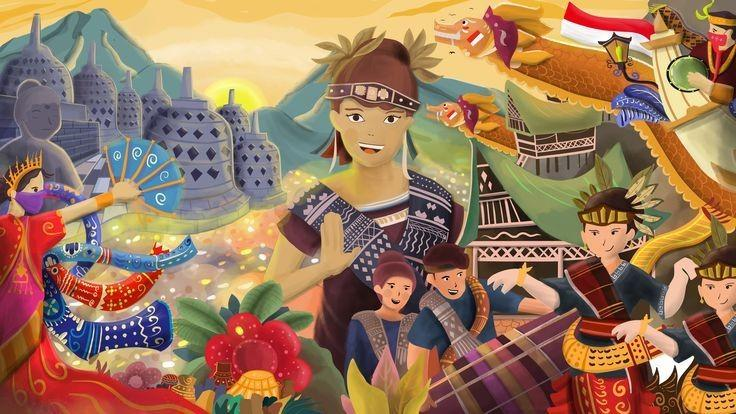

Mudahnya Melestarikan Budaya Lokal di Kehidupan Sehari-Hari
Indonesia dikenal sebagai negara dengan ribuan kebudayaan unik, mulai dari bahasa, tarian, adat istiadat, pakaian tradisional, hingga kerajinan tangan. Namun, di era modern ini, pelestarian budaya menjadi tantangan besar karena pengaruh globalisasi dan perubahan gaya hidup. Untuk itu, setiap individu memiliki peran penting dalam menjaga budaya agar tidak punah.
Berikut adalah 3 cara mudah yang bisa dilakukan siapa pun untuk menjaga dan melestarikan budaya lokal. Cara-cara ini sederhana, dapat dilakukan kapan saja, dan memiliki dampak besar bagi keberlanjutan budaya Indonesia.
1. Mengenalkan Budaya kepada Generasi Muda
Generasi muda adalah penerus kebudayaan bangsa. Semakin awal mereka diperkenalkan pada budaya, semakin kuat pula rasa cinta yang tumbuh dalam diri mereka. Kegiatan mengenalkan budaya dapat dilakukan melalui:
- Memperkenalkan permainan tradisional seperti congklak, gobak sodor, atau egrang.
- Menceritakan dongeng daerah seperti Malin Kundang, Timun Mas, atau legenda Danau Toba.
- Melibatkan anak dalam kegiatan seni tradisional seperti menari, belajar musik daerah, atau membatik.
- Melakukan kunjungan ke museum dan desa adat untuk melihat budaya secara langsung.
Dengan cara ini, generasi muda tidak hanya mengenal budaya, tetapi juga merasa bangga dan termotivasi untuk melestarikannya.
2. Mendokumentasikan Budaya
Dokumentasi adalah salah satu cara yang sangat efektif untuk menjaga budaya agar tidak hilang ditelan waktu. Melalui dokumentasi, budaya dapat dipelajari kembali kapan pun dan oleh siapa pun.
Beberapa bentuk dokumentasi yang bisa dilakukan:
- Merekam video pertunjukan seni tradisional seperti wayang, tari daerah, atau musik tradisi.
- Membuat foto detail pakaian adat, rumah adat, atau upacara adat.
- Menulis artikel atau blog tentang budaya daerah tertentu.
- Mengunggah dokumentasi ke media sosial agar dapat diakses lebih banyak orang.
Selain sebagai arsip budaya, dokumentasi juga berfungsi memperluas jangkauan informasi budaya sehingga dapat dinikmati oleh masyarakat luas bahkan hingga ke mancanegara.
3. Mendukung Seniman dan Pelaku Budaya Lokal
Seniman, pengrajin, dan pelaku budaya adalah penjaga utama keberlangsungan tradisi. Dukungan kita kepada mereka secara tidak langsung membantu budaya tetap hidup dan berkembang.
Beberapa bentuk dukungan sederhana namun berdampak besar:
- Membeli produk kerajinan tangan seperti batik, anyaman, pahatan kayu, atau perak daerah.
- Menghadiri pentas seni seperti festival budaya, tari tradisional, atau teater daerah.
- Memesan makanan tradisional untuk memperkenalkan kuliner khas daerah.
- Mempromosikan karya seniman lokal melalui media sosial.
Dengan memberi dukungan nyata, kita turut membuka peluang ekonomi bagi pelaku budaya sekaligus memperkuat identitas budaya Indonesia.
Kesimpulan
Melestarikan budaya tidak selalu membutuhkan biaya besar atau kegiatan rumit. Melalui langkah-langkah sederhana seperti mengenalkan budaya kepada anak-anak, mendokumentasikan tradisi, serta mendukung pelaku seni lokal, kita sudah turut berperan menjaga warisan bangsa untuk masa depan.
Budaya adalah identitas, dan identitas adalah kekuatan. Mari mulai melestarikan budaya dari hal kecil di sekitar kita.
Kembali ke Beranda